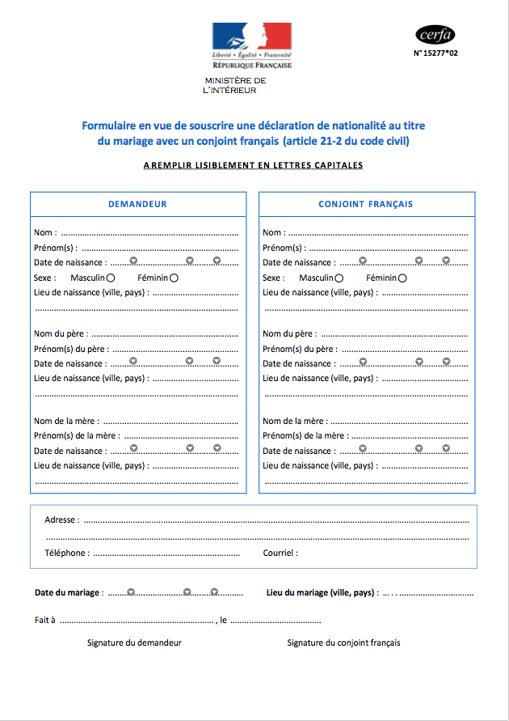

Pourriez-vous devenir français ?
Ils veulent pouvoir voter, accéder aux métiers de la fonction publique ou simplement se sentir mieux intégrés : chaque année, des dizaines de milliers d'étrangers vivant en France demandent la nationalité française. Ils doivent alors faire face aux méandres de l'administration française...
Et vous, pourriez-vous devenir français ? Choissisez votre personnage :
Aliona Hajar David Djavad Akmel
Installée dans la banlieue parisienne, Hajar, 28 ans, est arrivée en France, il y a sept ans. Après sa licence d’ingénierie statistique à la faculté de Tanger, elle s’est inscrite en études en master à l’université Diderot à Paris. Depuis deux ans maintenant, elle compte devenir entrepreneur.
Sur son temps libre, Hajar travaille à la création d’une application de modélisation prédictive. Son principe est simple : informer les franciliens sur la situation des transports en commun, les retards et les taux de fréquentations. Afin de financer son projet, elle espère obtenir un prêt bancaire mais aussi postuler à plusieurs concours de start-up. C’est pour maximiser ses chances, mais aussi parce qu’elle se voit poursuivre sa carrière et sa vie privée en France, qu’elle est déterminée à devenir française.
Hajar se rend à la préfecture proche de son domicile. Après trente minutes d’attente, elle accède au guichet. C’est Emma, agent administrative qui l’accueille.
Bonjour,
Je viens pour des renseignements sur le dossier de naturalisation.
J’aimerais obtenir aujourd’hui la nationalité française. J
Bonjour,
Vous souhaitez être naturalisée par décret ou par mariage ?
Vérifions ensemble la liste des pièces à fournir
Souhaitez-vous franciser votre pénom ?
Normalement, vous devez passer un test de connaissance de français. Mais si vous êtes diplômée en France vous en êtes exemptée à condition de nous délivrer la photocopie de votre diplôme obtenu ici.